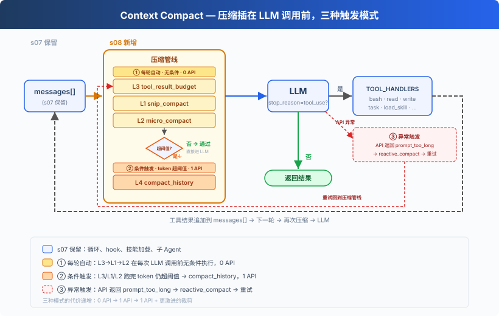
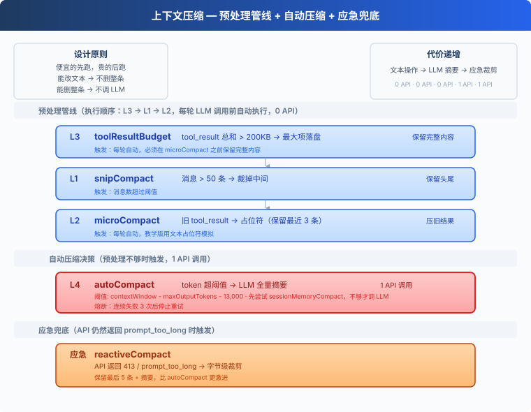
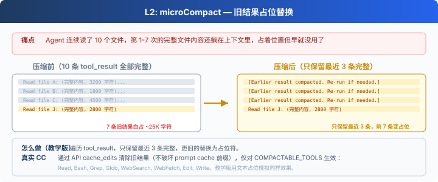
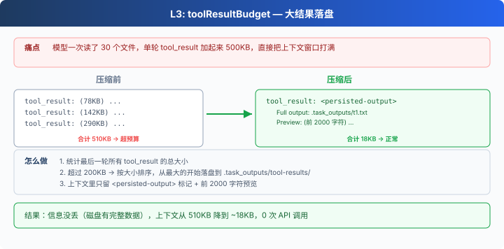
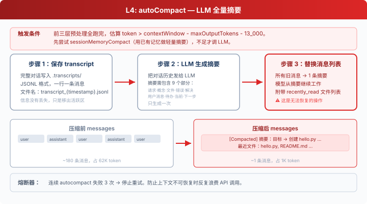

s08: Context Compact — 上下文总会满，要有办法腾地方
"上下文总会满, 要有办法腾地方" — 四层压缩策略, 便宜的先跑贵的后跑。 Harness 层: 压缩 — 干净的记忆, 无限的会话。
On this page
s01 → s02 → s03 → s04 → s05 → s06 → s07 → s08 → s09 → s10 → ... → s20
"上下文总会满, 要有办法腾地方" — 四层压缩策略, 便宜的先跑贵的后跑。
Harness 层: 压缩 — 干净的记忆, 无限的会话。
问题
Agent 跑着跑着，不动了。
手里有 bash、有 read、有 write，能力是够的。但它读了一个 1000 行的文件（~4000 token），又读了 30 个文件，跑了 20 条命令。每条命令的输出、每个文件的内容，全都堆在 messages 列表里。
上下文窗口是有限的。满了之后，API 直接拒绝：prompt_too_long。
不压缩，Agent 根本没法在大项目里干活。
解决方案

保留 s07 的 hook 结构、技能加载、子 Agent 等骨架，省略部分工具细节以聚焦压缩。核心变动：每轮 LLM 调用前插入三层预处理器（0 API），token 仍超阈值时触发 LLM 摘要（1 API），API 报错时应急裁剪。
核心设计：便宜的先跑，贵的后跑。
工作原理

L1: snip_compact — 裁掉无关的旧对话
Agent 跑了 80 轮对话，messages 攒了 160 条。最前面的"帮我创建 hello.py"和当前工作几乎无关了，但全占着位置。
消息数超过 50 条 → 保留头部 3 条（初始上下文）和尾部 47 条（当前工作），中间裁掉；唯一额外边界条件是，不能把 assistant(tool_use) 和后面的 user(tool_result) 拆开：
def snip_compact(messages, max_messages=50):
if len(messages) <= max_messages:
return messages
head_end, tail_start = 3, len(messages) - (max_messages - 3)
if _message_has_tool_use(messages[head_end - 1]):
while head_end < len(messages) and _is_tool_result_message(messages[head_end]):
head_end += 1
if _is_tool_result_message(messages[tail_start]) and _message_has_tool_use(messages[tail_start - 1]):
tail_start -= 1
snipped = tail_start - head_end
placeholder = {"role": "user", "content": f"[snipped {snipped} messages from conversation middle]"}
return messages[:head_end] + [placeholder] + messages[tail_start:]
裁掉的是消息本身，只是在切口处多做一步保护；剩下的消息里 tool_result 内容仍在累积——第 34 条消息里可能躺着 30KB 的旧文件内容。→ L2。
L2: micro_compact — 旧工具结果占位

Agent 连续读了 10 个文件。第 1-7 次的完整内容还躺在上下文里，早就不需要了，但占着大量空间。
只保留最近 3 条 tool_result 的完整内容，更旧的替换为一行占位符：
KEEP_RECENT_TOOL_RESULTS = 3
def micro_compact(messages):
tool_results = collect_tool_result_blocks(messages)
if len(tool_results) <= KEEP_RECENT_TOOL_RESULTS:
return messages
for _, _, block in tool_results[:-KEEP_RECENT_TOOL_RESULTS]:
if len(block.get("content", "")) > 120:
block["content"] = "[Earlier tool result compacted. Re-run if needed.]"
return messages
旧结果清掉了，但单条新结果可能就有 500KB——一个 cat 大文件的输出就能打满上下文。→ L3。
L3: tool_result_budget — 大结果落盘

模型一次读了 5 个大文件，单条 user 消息里所有 tool_result 加起来 500KB。
统计最后一条 user 消息里所有 tool_result 的总大小。超过 200KB → 按大小排序，从最大的开始落盘到 .task_outputs/tool-results/，上下文里只留 <persisted-output> 标记 + 前 2000 字符预览。模型看到标记后知道完整内容在磁盘上，需要时可以重新读。
def tool_result_budget(messages, max_bytes=200_000):
last = messages[-1]
blocks = [(i, b) for i, b in enumerate(last["content"])
if b.get("type") == "tool_result"]
total = sum(len(str(b.get("content", ""))) for _, b in blocks)
if total <= max_bytes:
return messages
ranked = sorted(blocks, key=lambda p: len(str(p[1].get("content", ""))), reverse=True)
for idx, block in ranked:
if total <= max_bytes:
break
block["content"] = persist_large_output(block["tool_use_id"], str(block["content"]))
total = recalculate_total(blocks)
return messages
前三层都是纯文本/结构操作，0 API 调用，但也无法"理解"对话内容。上下文可能仍然太大。→ L4。
L4: compact_history — LLM 全量摘要

前三层全跑完了，但在超大项目中连续工作 30 分钟后，token 仍然超过阈值。
三步流程：
- 保存 transcript：完整对话写入
.transcripts/，JSONL 格式。transcript 保留了可恢复记录，但模型的活跃上下文里只剩摘要。对模型当下推理来说，细节已经不在上下文中了。教学代码没有提供 transcript 检索工具。 - LLM 生成摘要：把对话历史发给 LLM，要求保留当前目标、重要发现、已改文件、剩余工作、用户约束等关键信息。
- 替换消息列表：所有旧消息被替换为一条摘要。教学版只保留摘要；真实 Claude Code 会在 compact 后重新附加部分最近文件、计划、agent/skill/tool 等上下文。
def compact_history(messages):
transcript_path = write_transcript(messages) # 先保存完整对话
summary = summarize_history(messages) # LLM 生成摘要
return [{"role": "user",
"content": f"[Compacted]\n\n{summary}"}]
熔断器：连续失败 3 次后停止重试，防止死循环浪费 API 调用。
应急: reactive_compact
有时候 API 还是返回 prompt_too_long（413），上下文增长速度快于压缩触发速度时。
这时触发 reactive_compact：比 compact_history 更激进，从尾部回退，但仍要避免留下孤立 tool_result。
def reactive_compact(messages):
transcript = write_transcript(messages)
summary = summarize_history(messages)
tail_start = max(0, len(messages) - 5)
if _is_tool_result_message(messages[tail_start]) and _message_has_tool_use(messages[tail_start - 1]):
tail_start -= 1
return [{"role": "user",
"content": f"[Reactive compact]\n\n{summary}"}, *messages[tail_start:]]
reactive compact 有重试上限（默认 1 次）。再失败就抛出异常，不无限循环。完整的错误恢复逻辑留给 s11。
合起来跑
def agent_loop(messages):
reactive_retries = 0
while True:
# 三个预处理器（0 API 调用）
# 顺序：budget 先跑，确保大内容落盘后再做占位和裁剪
messages[:] = tool_result_budget(messages) # L3: 大结果落盘
messages[:] = snip_compact(messages) # L1: 裁中间
messages[:] = micro_compact(messages) # L2: 旧结果占位
# 还不够？LLM 摘要（1 API 调用）
if estimate_token_count(messages) > THRESHOLD:
messages[:] = compact_history(messages)
try:
response = client.messages.create(...)
except PromptTooLongError:
if reactive_retries < MAX_REACTIVE_RETRIES:
messages[:] = reactive_compact(messages) # 应急
reactive_retries += 1
continue
raise # 超过重试上限，抛出异常
# ... 工具执行 ...
# compact 工具：模型主动调用时触发 compact_history
if block.name == "compact":
messages[:] = compact_history(messages)
results.append({..., "content": "[Compacted. History summarized.]"})
messages.append({"role": "user", "content": results})
break # 结束当前 turn，用压缩后的上下文开始新一轮
顺序不能换。 L3（budget）在 L2（micro）前面，因为 micro 会把旧的大 tool_result 替换成一行占位符，budget 必须在那之前把完整内容落盘。这也是为什么 CC 源码把 applyToolResultBudget 放在最前面。
相对 s07 的变更
| 组件 | 之前 (s07) | 之后 (s08) |
|---|---|---|
| 上下文管理 | 无（上下文无限膨胀） | 四层压缩管线 + 应急 |
| 新函数 | — | snip_compact, micro_compact, tool_result_budget, compact_history, reactive_compact |
| 工具 | bash, read, write, edit, glob, todo_write, task, load_skill (8) | 8 + compact (9) |
| 循环 | LLM 调用 → 工具执行 | 每轮前跑三层预处理器 + 阈值触发 compact_history |
| 设计原则 | — | 便宜的先跑，贵的后跑 |
试一下
cd learn-claude-code
python s08_context_compact/code.py
试试这些 prompt：
Read the file README.md, then read code.py, then read s01_agent_loop/README.md（连续读多个文件，观察 L2 压缩旧结果）Read every file in s08_context_compact/（一次性读大量内容，观察 L3 落盘）- 反复对话 20+ 轮，观察是否出现
[auto compact]或[reactive compact]
观察重点：每次工具执行后，旧 tool_result 是否被压缩？连续对话后 token 超阈值时，是否自动触发了摘要？
接下来
上下文压缩让 Agent 能跑很久不会崩。但每次压缩后，用户之前告诉它的偏好、约束也跟着丢了。能不能让 Agent 有选择地记住重要的事？
s09 Memory → 三个子系统：选择记什么、提取关键信息、整理巩固。跨压缩、跨会话。